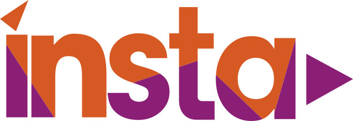

Webitech est une école supérieure spécialisée dans le domaine de l'informatique formant des étudiants de Bac +2 à Bac +5 en alternance ou en initial. Les diplômes proposés par l'école sont reconnus par l'État et tous les titres sont certifiés au RNCP.

INSTA est une école supérieure spécialisée dans le domaine de l'informatique formant des étudiants de Bac +2 à Bac +5 en alternance ou en initial. Tous les diplômes proposés par l'école sont reconnus par l’état et tous les titres sont certifiés au RNCP.
Stage support réseau chez NYX à Paris : Stage support réseau chez NYX à Paris :Mon stage au sein de l'entreprise NYX à Paris a été ma toute première immersion concrète dans le monde de l'informatique professionnelle. J'y ai découvert le métier de technicien support en participant activement à la maintenance du parc informatique et en apportant une aide précieuse à l'assistance aux utilisateurs au quotidien. Cette expérience m'a permis d'apprendre à gérer les problèmes courants sur les postes de travail, tout en comprenant l'organisation d'un réseau local en milieu réel. Ce stage a posé les bases fondamentales de mon parcours, me permettant d'aborder avec sérénité et curiosité les concepts beaucoup plus techniques du programme BTS SIO SISR par la suite.
Stage technicienne réseau chez INSTA à Paris : Stage technicienne réseau chez INSTA à Paris : Mon stage au sein de INSTA a été un véritable accélérateur de compétences techniques. J'y ai réalisé des missions de fond sur des outils piliers de l'administration système et réseau, notamment la mise en place de supervision avec Zabbix et la gestion de parc informatique via GLPI. En travaillant quotidiennement dans des environnements Windows Server, j'ai pu appréhender concrètement toutes les bases fondamentales du programme BTS SIO SISR. Ce parcours m'a permis de maîtriser l'ensemble de la chaîne de support et d'infrastructure, de la maintenance des postes de travail à la sécurisation des services réseau, me donnant ainsi une vision globale et opérationnelle du métier de technicienne système et réseau.